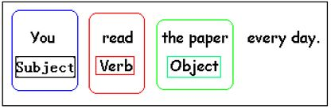

The answer to many of our questions is yes or no. These are called “yes/no questions.” We make yes/no questions in these ways:
Be + Subject + Object
Is he home? (Yes, he is. No, he isn't.)
Do/Does + Subject + Verb + Object
Does he like pizza? (Yes, he does. No, he doesn't.)
Auxillary + Subject + Verb + Object
Can he eat pizza? (Yes, he can. No he can't.)
Subject: the person/thing making the action in a sentence.
Verb: the action word in a sentence.
Object: the person/thing that receives the action in a sentence.
Auxillary: words that give us more information about the action in a sentence.
Many people like to travel. Do you like to travel? But traveling is also expensive. For example, a hotel room is often expensive. Do you like to stay in expensive hotel rooms? Or do you like to stay in cheap hotel rooms? Often, food is also expensive to buy when you travel. Can you find cheap food when you travel? Or is it too hard to find cheap food when you travel?
Find the yes/no questions.
I have a dog. Do you have a dog? I love my dog. I am very happy when I am with my dog. Are you happy when you are with dogs? My dog does not make my mom happy. My dog makes my mom sneeze! Do dogs make you sneeze? I will always keep my dog. Even if my dog made me sneeze, I would keep my dog. Would you keep a dog that made you sneeze?
Do you have a dog?
Are you happy when you are with dogs?
Do dogs make you sneeze?
Would you keep a dog that made you sneeze?